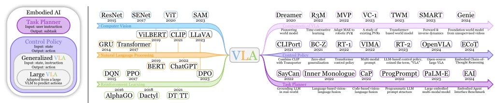
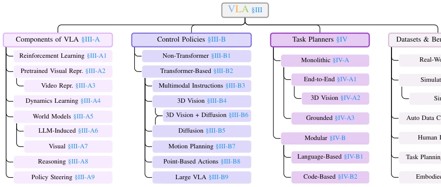
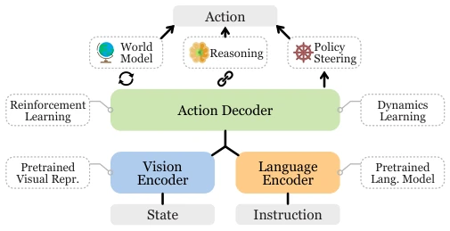
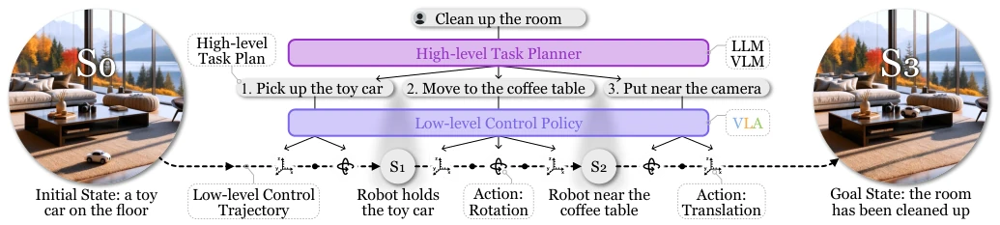
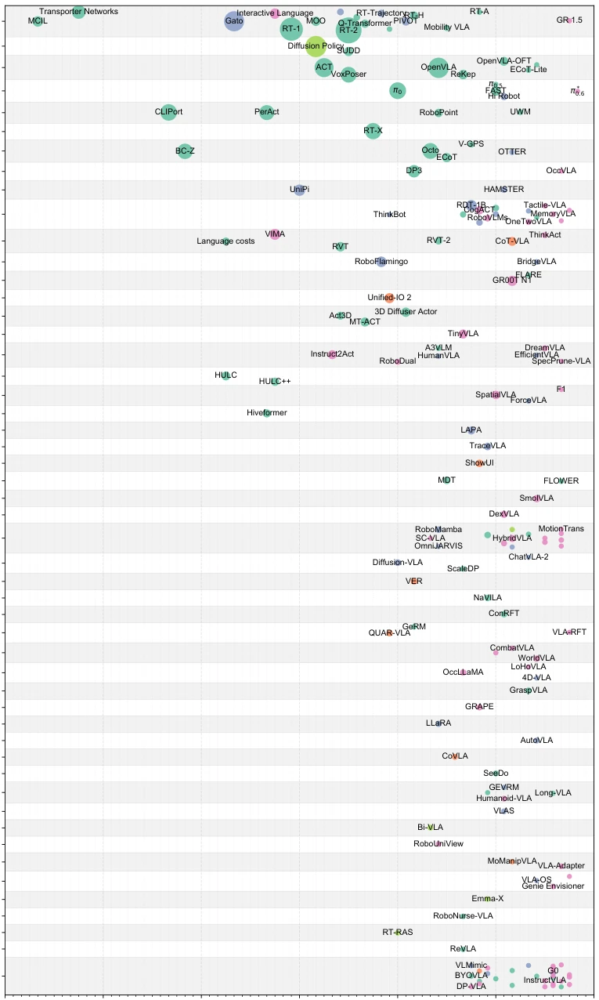
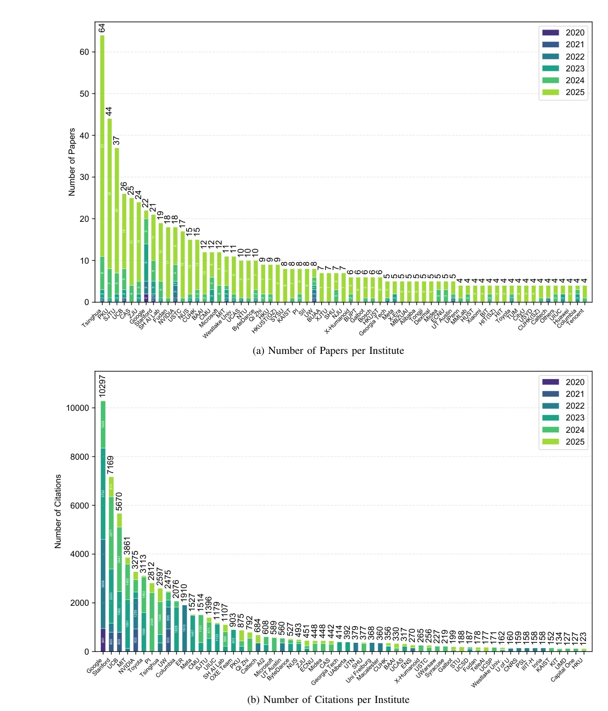
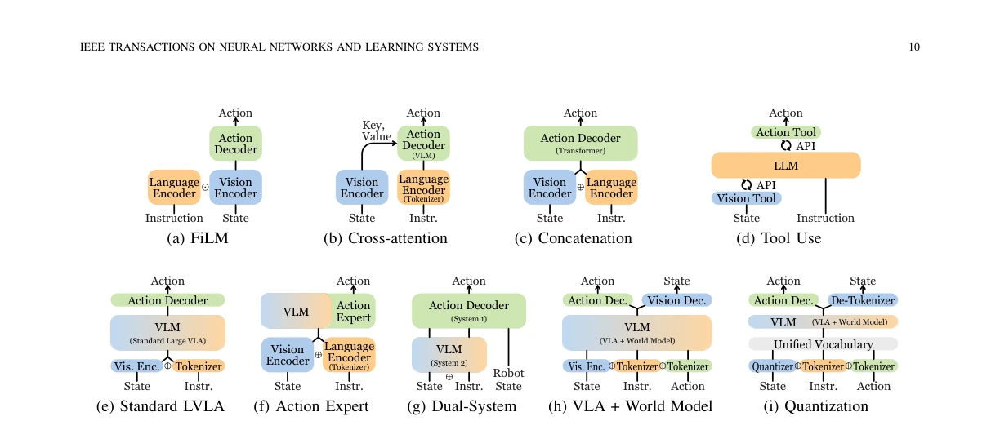
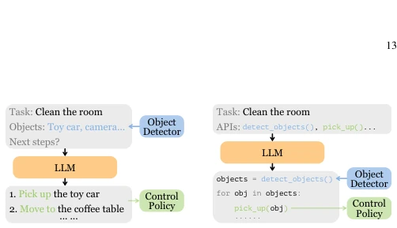
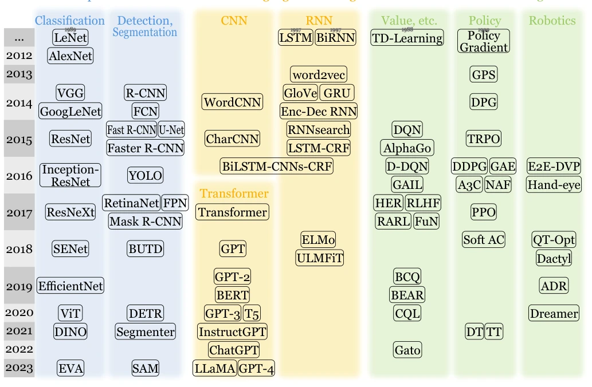
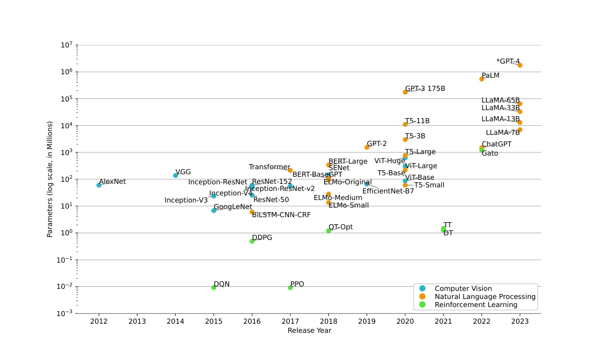

This review conducts a 'spring cleaning' of the VLA field, attempting to bring order amidst the chaos of explosive growth in models such as RT-2 and OpenVLA. The authors define VLA as models processing vision, language, and actions, establishing a fairly comprehensive classification. However, as a review, its greatest contribution lies in 'organization' rather than 'invention.' Although it clearly delineates components, strategies, and planning, facing the VLA field which is still in a phase of rapid, unregulated growth, many classification boundaries remain quite blurry. For instance, world models and dynamics learning are sometimes used interchangeably, and the authors fail to provide an absolutely clear boundary. Moreover, it fails to resolve the most pressing data issues plaguing VLA, merely listing them and implying data scarcity is a bottleneck. Overall, it is a solid introductory guide suitable for novices to quickly grasp the VLA panorama, but one should not expect it to directly conjure an AGI, as models are still in the 'alchemy' stage and generalization remains worrying.
For embodied AI to be deployed, mere chatting is insufficient; action is required. Previous RL methods [4] relied too heavily on specific environments, exhibited poor generalization, and struggled to adapt to complex physical worlds. Although LLMs are intelligent, they lack perception and action control capabilities regarding the physical world. VLA models [1] attempt to combine both, translating language instructions into concrete actions, yet development has been too rapid and disordered, lacking unified standards. Existing reviews do not focus on the VLA core, instead prioritizing foundation models. This paper aims to organize VLA architecture, components, and task planning, address conceptual confusion, and provide a roadmap for subsequent research. Specifically, integrating LLM reasoning capabilities with robot control remains a key current challenge. Through classification, it assists researchers in positioning their work and avoiding reinventing the wheel.

Fig. 2. (a) Venn diagram that outlines the main concepts in embodied AI discussed in this article. (b) Timelines that trace the evolution from unimodal models to VLA models.

Fig. 3. Taxonomy of VLA models. The organization of this survey follows this taxonomy.
The overall framework is divided into three parts: components, control strategies, task planning. The component layer includes visual representations (e.g., CLIP, DINOv2), dynamics learning (forward/backward), and world models (Dreamer, Genie). The control strategy layer is divided into low-level (direct action output, e.g., RT-2, OpenVLA) and high-level (task decomposition, e.g., SayCan [9]). In terms of data flow, input is vision + language, output is action. The innovation lies in uniformly defining VLA as models processing multi-modal inputs to generate actions, and distinguishing between Large VLA and normal VLA. Low-level policy is responsible for execution, High-level planner is responsible for decomposition. World models are used to predict future states, assisting planning. Reasoning modules such as CoT are introduced to improve decision quality.

Fig. 1. General architecture of VLA models. Three representative methods for action prediction are shown. Related components are presented in dashed boxes.

Fig. 4. Illustration of a hierarchical robot policy. The high-level task planner decomposes the user instruction into subtasks, which are then executed step by step by the low-level control policy.
The paper itself contains no experiments but summarizes evaluations of existing work. Datasets cover real (BridgeV2) and simulation (Meta-World). Baselines include CLIPort, RT-2 [1], OpenVLA. Metrics are mainly task success rate. Findings show Large VLA outperforms traditional RL in generalization, but is heavily data-dependent. Ablation studies mainly exist in the reviewed papers; this paper summarizes these findings, such as DINOv2 outperforming CLIP. Evaluations show that Transformer-based architectures perform better on long-horizon tasks, while diffusion policies are more stable in continuous action control.

Fig. 10. Visualization of the VLA research landscape.

Fig. 12. VLA research output and impact by institution.
其他图片Other Figures

Fig. 5. Representative architectures of VLA models. Some correspond to the “Architecture” column in Table III. ⊙: Hadamard product. ⊕: Concatenation.

Fig. 6. Different approaches to connect LLM to multimodal modules in modular task planners.

Fig. 7. A brief timeline of pivotal unimodal models leading to the development of vision-language-action models, organized by their publication years. Details can be found in Appendix:B.

Fig. 8. The growing scale of unimodal models over the years. ∗GPT-4’s model size is estimated since it has not been officially disclosed.